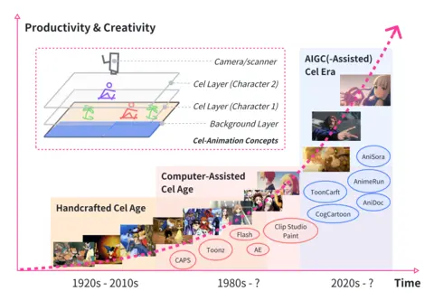
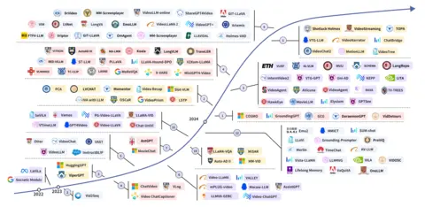
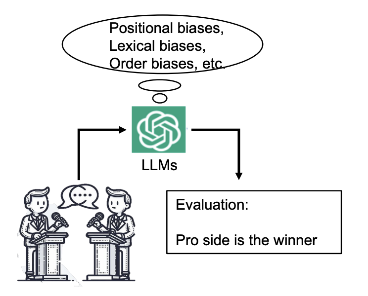
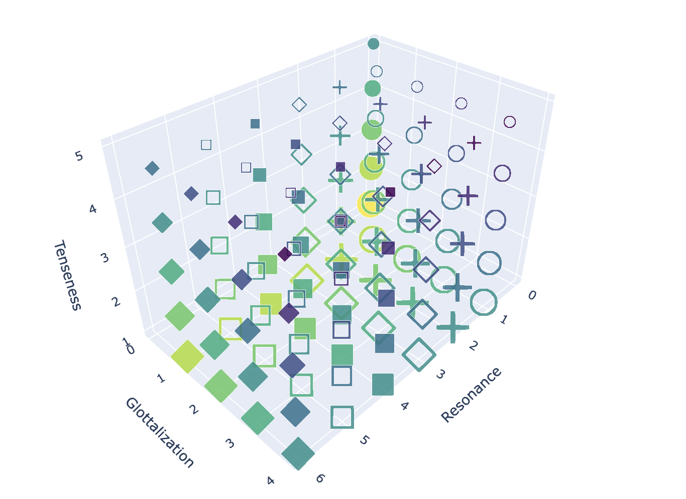

Hi! 👋
I am a PhD student, supervised by Dr. Chenliang Xu, in Computer Science department at University of Rochester. My research interests are Multi-modal Learning and Computer Graphics, including Multi-modal Large Language Models, Digital Human Rendering/Motion Synthesis, and Video Generation.
Previously, I was an undergraduate student who received the highest honor distinction in research Bachelor of Science in Computer Science at the University of Rochester.
Vision-language models and multi-modal understanding
Realistic avatar rendering and animation
Motion synthesis and video creation techniques
Generating natural gestures from speech
Research Scientist Intern, Meta Reality Lab
PhD in Computer Science, University of Rochester
Research Scientist Intern, FlawlessAI
BS in Computer Science with Highest Honor, University of Rochester
- [03/2025] I will join Meta Reality Lab as a Research Scientist Intern.
- [11/2024] One first author paper accepted 3DV 2025.
- [09/2024] One co-author paper accepted Siggraph Asia 2024.
- [07/2024] One first author paper accepted ECCV 2024.
- [06/2024] Joined FlawlessAI as a Research Scientist Intern.
- [05/2024] I received a BS degree in Computer Science with the Highest Honor Distinction in Research.
- [05/2024] One co-authored paper accepted to Interspeech 2024.
- [05/2024] One first-authored paper accepted to ACL 2024.
- [04/2024] I was honored as the National Student Employee of the Year for 2024, selected from a highly competitive pool of six candidates across the country.
- [12/2023] One first-authored paper accepted to ICASSP 2024.
- [01/2023] One co-authored paper accepted to AAAI 2021 Workshop.
-

- 
- 
-

-

-

-

-

- 
- 
-

-
 Contextualized Multi-Step Commonsense Reasoning through Context Extension AAAI Workshop 2023[Paper]
Contextualized Multi-Step Commonsense Reasoning through Context Extension AAAI Workshop 2023[Paper]
-
2024 Spring CSC 2/449: Machine Vision
Instructor: Dr. Chengliang Xu
-
2023 FALL CSC 446: Machine Learning
Instructor: Dr. Daniel Gildea
-
2023 SPRING CSC 2/447: Nature Language Processing
Instructor: Dr. Hangfeng He
-
2022 Fall CSC 2/448: Statistical Speech and Language Processing
Instructor: Dr. Daniel Gildea
CVPR 2024, 2025, EMNLP 2023, KDD 2024, AAAI 2024, ICLR 2025, 3DV 2025

© 2025 Andy (Pinxin) Liu - Last Updated: April 2025